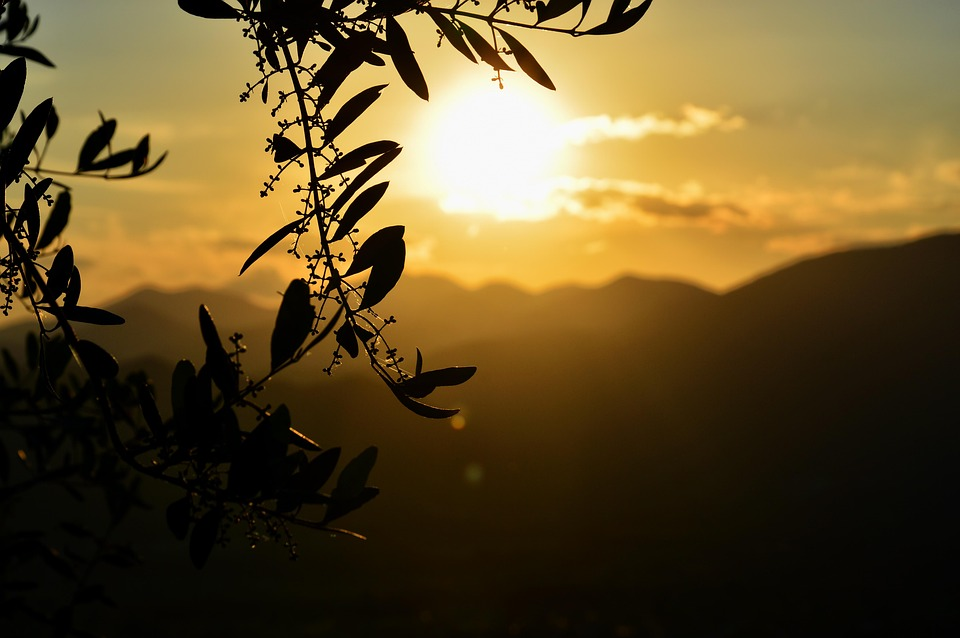

Kuleyzen’in Hikayesi
Kuleyzen’in İsmi ve Anlamı
Kuleyzen isminin kökeni, Hatay Altınözü’ne bağlı Tokaclı köyüne dayanır. "Kuleyzen", Arapça "kul" (iyi) ve "eyzen" (iyi insan) kelimelerinin birleşiminden türetilmiştir. Tokaclı köyünde, hem Hristiyan hem de Müslüman topluluklar yüzyıllardır bir arada yaşıyor. Buradaki Müslümanlar, köyün havasını ve insanlarını o kadar takdir etmişler ki, burayı "Kuleyzen" yani "iyi insanlar" olarak adlandırmışlardır. Bu dostluk ve saygı dolu geçmiş, Kuleyzen markasının temelini oluşturuyor.
Celikel Ailesinin Zeytin Tarımına Başlangıcı

Kuleyzen’in kökleri, Eris Celikel’in dedesi Durmuş Çelikel’in çok daha eski zamanlarına dayanır. Durmuş Çelikel, 1920’lerin başında Tokaclı köyünde doğmuş ve 1940’ların sonlarına doğru zeytin yetiştiriciliğine başlamıştır. Ailesinin çiftliğinde zeytin ağaçları yetiştirilmiş ve Durmuş Bey, bu ağaçların çoğunu kendisi dikmiştir. Zeytin tarımını büyük bir tutku ile yapmış ve bu iş, ailesi için sadece bir tarım faaliyeti değil, aynı zamanda bir yaşam tarzı halini almıştır.
Nilüfer Çelikel ve Sürdürülebilir Tarım
2010 yılında, Durmuş Çelikel çiftliği Nilüfer Çelikel’e devretmiştir. Nilüfer, aslında şehirli bir kadındı ve zeytincilik hakkında çok az şey biliyordu. Ancak, 1979 yılında Tokaclı’ya ilk geldiğinde, burada zeytinin ve zeytin ağacının anlamını keşfetti. Zeytinlerin nasıl toplandığını, ağaçların nasıl bakımsız bırakıldığını ve üretimin yalnızca yağ odaklı yapıldığını gördü. Bu, ona büyük bir ders oldu. O günden sonra zeytin ağaçlarına daha fazla saygı duyarak, sürdürülebilir bir tarım anlayışıyla üretim yapmaya karar verdi. Kayınpederi Durmuş Çelikel’in öğretileri, ona bu konuda rehberlik etti ve çiftliği organik tarıma yönlendirdi.
Eris Çelikel’in Hayatındaki Dönüm Noktası

Eris Celikel, 1980 yılında İstanbul’da doğmuş ve 5 yaşında ailesiyle İsviçre’ye taşınmış. İsviçre’de büyüdü ve 2007 yılında Türkiye’ye geri döndü. Kurumsal dünyada birkaç yıl çalıştıktan sonra, hayatını tamamen değiştirme kararı aldı. Güney Afrika’da bir süre yaşadıktan sonra, 2015 yılında ailesinin çiftliğini devralarak tamamen yeni bir yola girdi. Bu süreçte, ziraat mühendisliği konusunda hiçbir bilgisi yoktu. Ancak, toprakla olan bağını güçlendirmek ve işini daha profesyonel bir şekilde yürütmek için 2016 yılında ikinci üniversite eğitimine başlayarak Ziraat Mühendisliği (Peyzaj ve Bitki Koruma) bölümünden mezun oldu.
Pınar Coşkun ile Ortak Yönetim

Eris, 2019 yılında hayatına Pınar Coşkun’u dahil etti. Pınar, 1986 yılında İstanbul’da doğmuş ve 1989 yılında ailesiyle birlikte Hollanda’ya taşınmıştır. Dünya çapında önemli bir kariyere sahip olan Pınar, 2014 yılında Türkiye'ye geri dönmeden önce, birçok uluslararası şirkette başarılı görevlerde bulunmuştu. 2022 yılında ise çiftlikteki yönetimi Eris ile birlikte devralmaya karar verdi. Pınar ve Eris, birlikte hem işlerini hem de yaşamlarını paylaşıyorlar. Onlara köpekleri Panço ve kedileri Luna da eşlik ediyor. Birlikte, doğayla uyumlu ve insana saygılı bir yönetim anlayışını benimsiyorlar.
Kuleyzen: Doğaya ve Kaliteye Saygı
Kuleyzen, geleneksel yöntemlerle organik tarım yaparak kaliteli zeytinyağı üretimini sürdüren bir aile işletmesidir. Sahipleri Eris Çelikel ve Pınar Coşkun, üretim sürecinin her aşamasını, zeytinlerin toplanmasından sıkımına, depolanmasından şişelenmesine kadar kendi denetimlerinde gerçekleştiriyorlar. Bu, onlara doğayla iç içe bir üretim modeli kurma ve kaliteyi her zaman ön planda tutma imkânı sunuyor.
Zeytinyağları, sadece soğuk sıkım ve filtreli üretimle elde ediliyor, bu da onların kalitesinin en yüksek seviyede olmasını sağlıyor. Kuleyzen, sınırlı üretimi ve yüksek kalite anlayışıyla sofralara ulaşan bir zeytinyağı markası olarak, her bir damlasında doğaya ve geleneksel zeytin yetiştiriciliğine duyulan saygıyı barındırıyor.